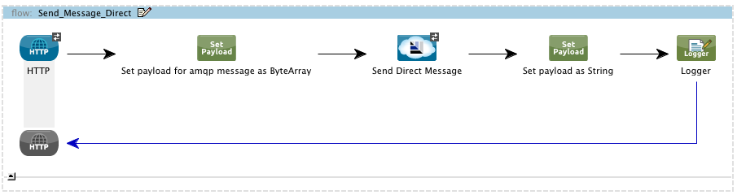
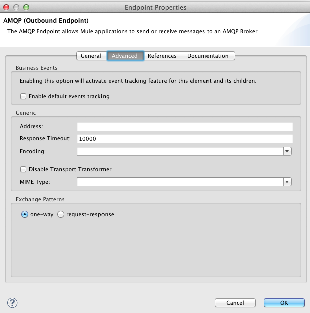
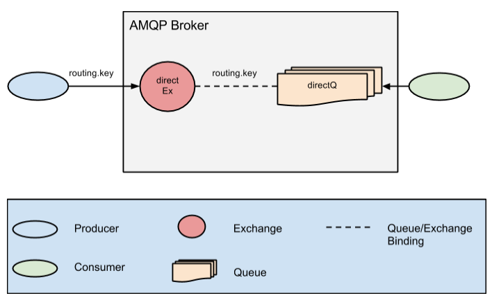
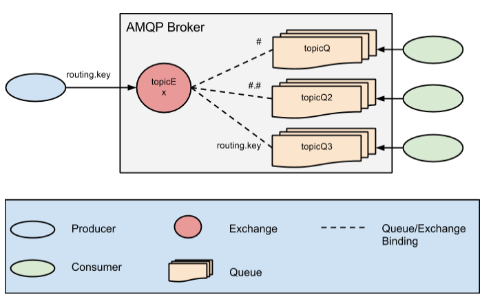
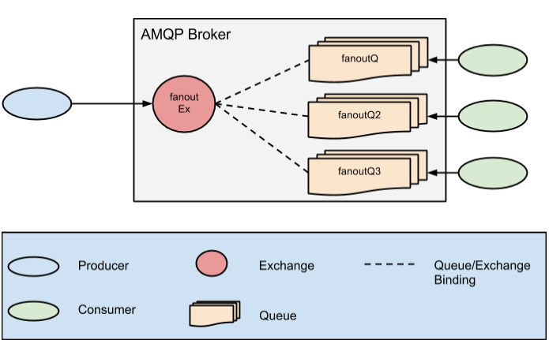
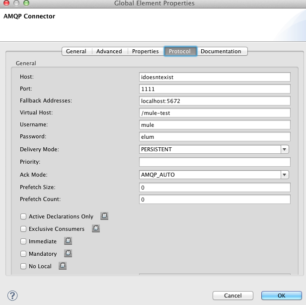
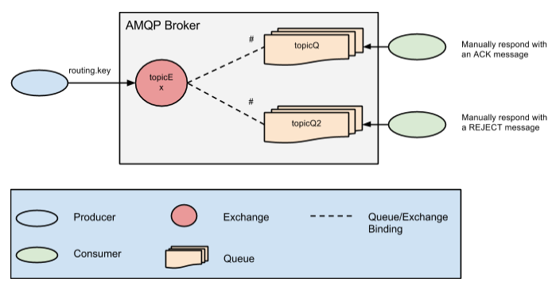

The AMQP Mule Studio Project shows all the basic capabilities of the AMQP Transport inside Studio.
It has a group of flows that each one expose certain functionality that will be explained.
This table shows the URLs available for all the flows in the demo.
| http://localhost:8090/direct | Send a message to the AMQP Broker using a Direct exchange type, and declare an Inbound Endpoint to consume the queue. |
| http://localhost:8090/fanout | Send a message to the AMQP Broker using a Fanout exchange type, and declare three Inbound Endpoints without routing key to consume the queue. |
| http://localhost:8090/topic | Send a message to the AMQP Broker using a Topic exchange type, and declare three Inbound Endpoints using various routing keys to consume the queue. |
| http://localhost:8090/fallback | Uses the direct example with a new configuration to demonstrate the fallback address lookup for brokers. |
| http://localhost:8090/component | Uses the topic example with a new configuration leaving manual acknowledgment of the messages to demonstrate an ACK and REJECT of a message. |
All the flows share the same structure for sending the message to the broker though it might use a different configuration.
The structure is as follows
1. Use an HTTP Endpoint to invoke the flow (check HTTP Endpoint Mapping).
2. Use a Set Payload component to establish the payload with a binary message.
3. Use the AMQP Endpoint (Outbound) to send the message to the broker.
4. Use a Set Payload component to establish the payload as a String.
5. Log the sending of the message in console.
In the point 3 you will find that all the properties are empty. This is because it's using an Endpoint Reference (check "References" section - "Endpoint Reference").
This acts as a template, using all the attributes defined in that endpoint until you define some in the endpoint using it, and this will cause an overwrite, having the higher priority the one that is referencing and lesser the one being referenced.
Important: all the AMQP Endpoints should be configured as a one-way endpoints. This can be acomplished in the "Advance" section of the endpoint.
The AMQP structure of this example is as follow
This flows sends a message to the AMQP Broker using a Direct type of message (check the "Send message" section).
And define only one AMQP Inbound Endpoint to listen to the message.
Because it's a direct exchange type, the routing key used has to be the same that the message had declared.
The configuration for this endpoints has ack mode AUTO_ACK, so when an Inbound Endpoint receives a message, automatically sends an ACK.
The AMQP structure of this example is as follow
This flows sends a message to the AMQP Broker using a Topic type of message (check the "Send message" section).
And define three AMQP Inbound Endpoints to listen to the message.
Because it's a Topic exchange type, the routing key can use wildcards.
The configuration for this endpoints has ack mode AUTO_ACK, so when an Inbound Endpoint receives a message, automatically sends an ACK.
The AMQP structure of this example is as follow
This flows sends a message to the AMQP Broker using a Fanout type of message (check the "Send message" section).
And define three AMQP Inbound Endpoints to listen to the message.
Because it's a Fanout exchange type, there is no need to use a routing key. All the queues attached to the exchange will receive the message.
The configuration for this endpoints has ack mode AUTO_ACK, so when an Inbound Endpoint receives a message, automatically sends an ACK.
This flow uses a configuration with a host:port that doesn't exists, and define a "Fallback Address" with the real host:port of the current running broker.
When the application starts and an endpoint is using this configuration, it will fail the first attempt to connect and it will try to use one of the fallback addresses.
Note: the error is internal and don't be displayed in the console. If none of the brokers can be found in the host:ports provided, then it will fail.
The AMQP structure of this example is as follow
The configuration for this endpoints has ack mode MANUAL, so when an Inbound Endpoint receives a message we should use a ACK or REJECT message component after the flow ends to inform the broker.
The example works as a Topic Message Flow, but using the ACK and REJECT components to manually respond to the broker.